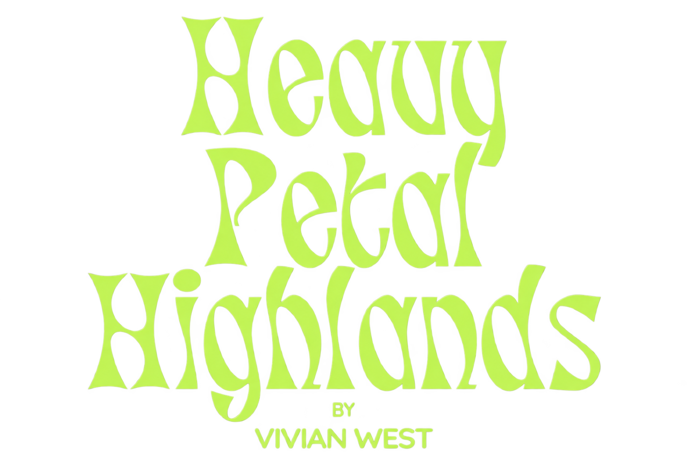
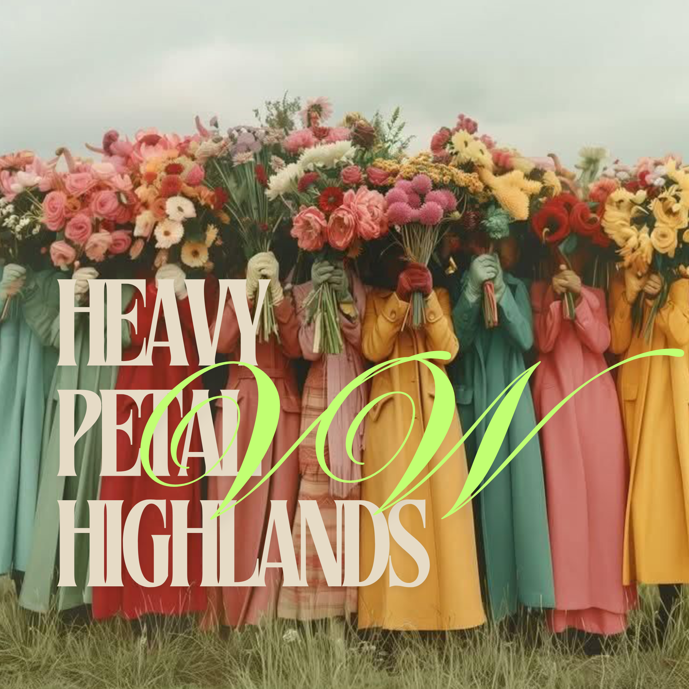

Introducing Heavy Petal Highlands.
A floral design studio built on the idea that flowers are more than decoration—they’re an artistic medium.
I’m Vivian, the designer behind Heavy Petal Highlands. My work blends living and premium artificial botanicals to create sculptural, intentional floral experiences that feel immersive, modern and deeply personal. Every stem is placed with purpose. Every composition is designed to evoke feeling.
Heavy Petal Highlands exists at the intersection of florals, art, fashion, interiors and storytelling. I’m drawn to bold textures, unexpected palettes, organic movement and designs that challenge what’s traditionally expected from floral work.
I’m especially excited to collaborate with artists, photographers, brands, stylists, designers, event professionals and fellow creatives who believe the best ideas are born just outside our comfort zones. Whether we’re building an editorial installation, styling a campaign, designing an event, or creating something that simply deserves to exist, I want to make work that leaves a lasting impression.
This studio is an invitation to explore, experiment and create without limits. Reach out to connect.
Vivian West
